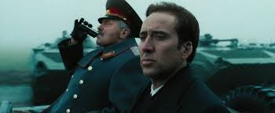
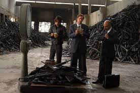
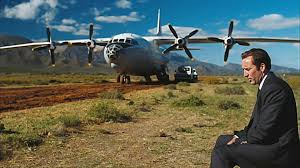
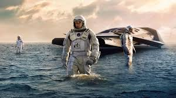
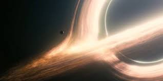
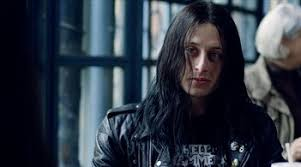
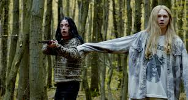
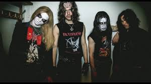

Мои любимые фильмы
Фильм 1: Оружейный барон
Краткое содержание фильма «Оружейный барон». Криминальная драма 2005 года, третий полнометражный фильм режиссёра Эндрю Никкола, в главных ролях Николас Кейдж, Джаред Лето, Бриджит Мойнахан и Итан Хоук. Фильм следует за Юрием Орловым, который незадолго до распада СССР занялся незаконной торговлей оружием и в конечном итоге стал хорошо известным и беспринципным торговцем оружием.
  | Параметр | Значение |
|---|---|
| Год | 2005 |
| Страна | США |
| Жанр | Драма |
| Режиссер | Эндрю Никкол |
Фильм 2: Интерстеллар
Краткое содержание фильма «Интерстеллар». Эпическая научно-фантастическая драма 2014 года, девятый полнометражный фильм режиссёра Кристофера Нолана. Действие кинокартины разворачивается в недалёком будущем, где людям на всей планете угрожают катастрофические изменения климата и массовый голод.
 
| Параметр | Значение |
|---|---|
| Год | 2014 |
| Страна | США |
| Жанр | Научная фантастика |
| Режиссер | Кристофер Нолан |
Фильм 3: Повелители хаоса
Краткое содержание фильма «Повелители хаоса». Это биографический триллер режиссёра Юнаса Окерлунда, посвящённый трагическим событиям вокруг норвежской блэк-металлической сцены начала 1990-х.
  | Параметр | Значение |
|---|---|
| Год | 2018 |
| Страна | Швеция |
| Жанр | Триллер |
| Режиссер | Юнас Окерлунд |